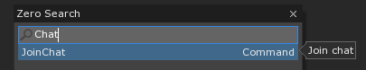
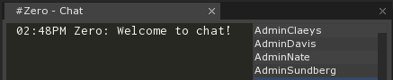
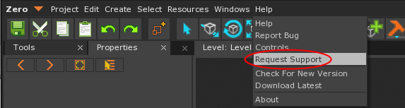
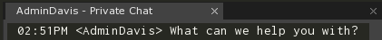

Zero Engine Chat
This section covers how to use the in-engine IRC chat client.
Community Support
Don’t have a bug, but still have a quick question? You can always try to connect to other users using the Zero Engine in the Chat Window. Asking your peers a quick question can be a great qay to get a quick response.


Zero Engine Developer Support
When needing help from a Zero Engine Developer, request it via the Request Support menu option.

This button sends the developers a taskbar notification alerting them of the request, making it easier to get you help in a timely manner.
